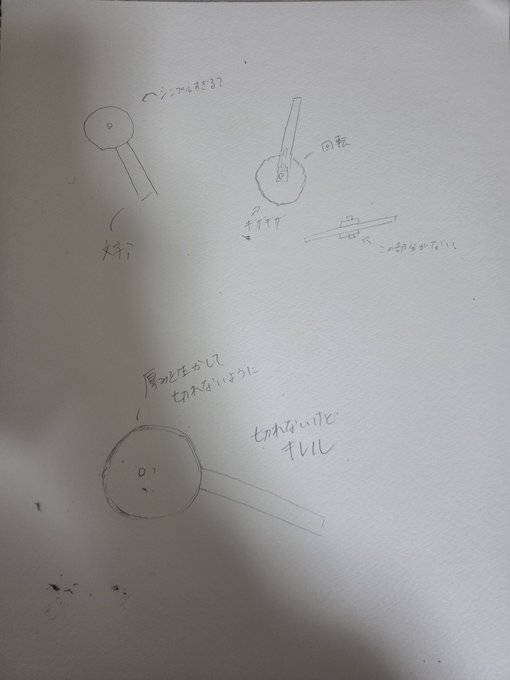
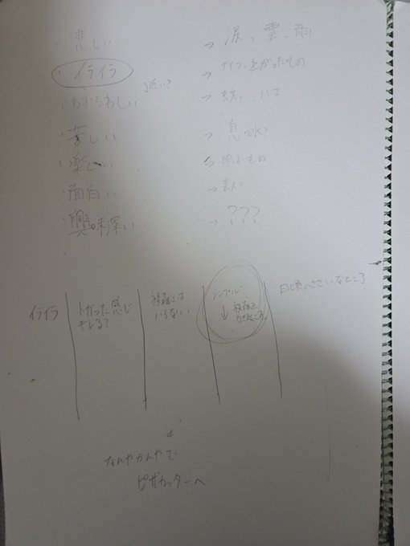
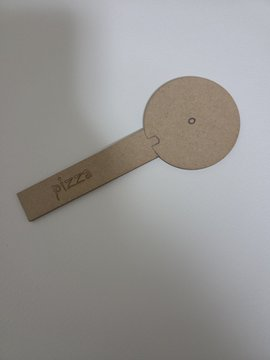

作品のタイトルと説明
作品のタイトルは「切れないピザカッター🍕」
です。
ピザカッターでピザがなかなか切れない、うまく切れないという経験、あると思います。そう、あるんです。
そんな時、すごいイライラしてきます。その気持ちをより起こせるような、実用性皆無のピザカッターを作成しました。
課題に向けたワーク


実物の写真

まとめと感想
切れないというコンセプトを追い求めすぎて、デザインを実用性しか考えず、見た目や持った感触などを無視してしまった。
木製であるため一度使用するとシミがついてしまい、使えなくなってしまった。盲点だった。感情も限定的であり、形状制作における創造性という部分が欠けざるを得ない形となってしまった。